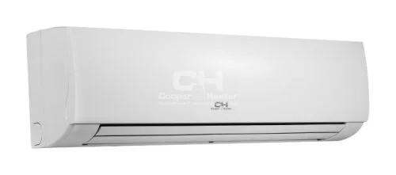

COOPER & HUNTER · CSEFU KLÍMA
CH-FW30K2A oldalfali beltéri egység 2,9 kW fan coil
Vízzel működő hőleadó, amely ventilátorral segíti a helyiség hűtését vagy fűtését. Megfelelő vízkör és hűtő-fűtő rendszer szükséges hozzá.
Erről a készülékről kérek ajánlatotCsak készülékvásárláshoz is kérhet ajánlatot. Az aktuális ár és elérhetőség egyeztetés alapján.

AMIT A MINDENNAPOKBAN ÉREZ
Mit érdemes tudnia róla?
- A vízkör része. A teljesítmény függ a víz hőmérsékletétől és a ventilátor fokozatától. Hűtéshez kondenzvíz-elvezetést is kialakítunk.
A kW a készülék teljesítménye, nem az óránkénti villanyfogyasztás. A szoba mérete mellett a szigetelés, a tájolás és a használat is számít.
A gondos telepítéshez az elhelyezést, a csővezetést és a műszaki előkészítést is átbeszéljük. Így dolgozik Gyuri
A LEGFONTOSABB ADATOK
A választás kapaszkodói
- Teljesítmény a gyártói kínálatban
- 2,9 kW
- Beltéri egység mérete
- 915x290x233
- Gyártói modelljelölés
- CH-FW30K2A
Méreteknél az adatlap mértékegysége és sorrendje irányadó.
A gyártói oldalon szereplő garancia: 3 év garancia. A pontos jótállási feltételeket, a szükséges regisztrációt és karbantartást vásárlás előtt egyeztetjük.
Forrás: C&H magyar termékoldal · Ellenőrizve: 2026. október 9. A gyártó módosíthatja a kínálatot és az adatokat; a pontos konfigurációt az ajánlatban rögzítjük.
Ez lehet az Ön készüléke?
Írja meg, hol és mire használná. A típust és a kivitelezést együtt egyeztetjük.